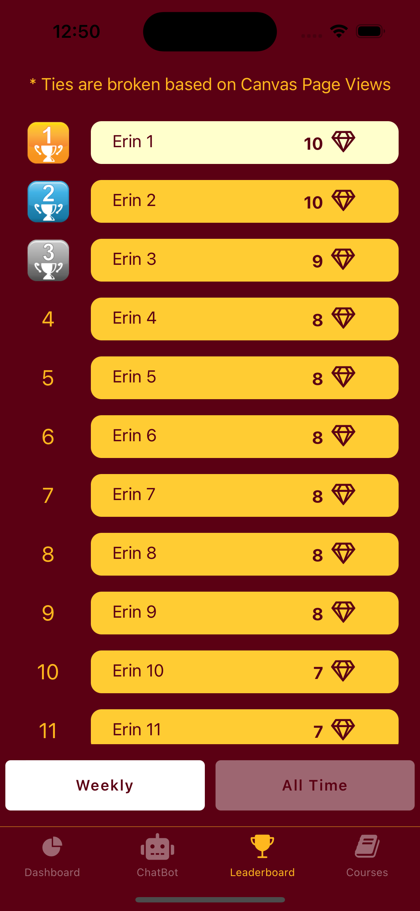
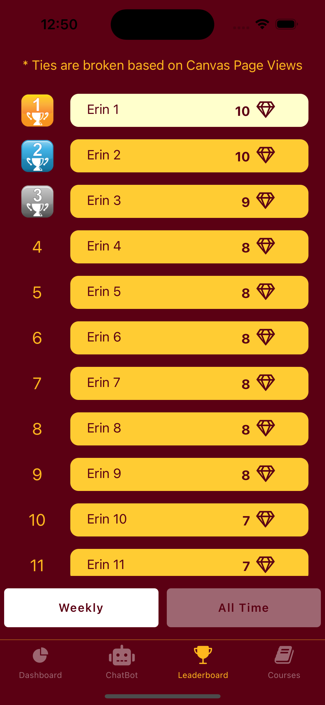

SmartPAL Instructor Guide
SmartPAL is an AI-powered learning support platform designed to enhance student engagement and learning performance while empowering instructors with data-driven, AI-powered insights and productivity tools.
SmartPAL integrates with Canvas and supports teaching and learning through a combination of:
- A course-contextualized AI chatbot designed to support self-regulated learning
- AI-Guided Assignments that promote critical thinking and autonomy in human-AI collaboration
- Built-in structured reflection and metacognitive prompts
- Gamification for sustained engagement
- Instructor-facing summaries, dashboards, and AI-powered automation for routine tasks
Here is a short introduction to SmartPAL:
Using SmartPAL as Instructional Tool
Using SmartPAL as Instructional Tool with Research Participation
How Does SmartPAL Interact with Students?
SmartPAL is designed to enhance course engagement throughout the learning lifecycle. It uses a combination of chatbot and gamification to achieve this goal.
- Chatbot: The GenAI-powered chatbot is designed to answer student questions about the course ("pull" from students) as well as sending students reminders, updates, encouragements, and nudges ("push" to students)
- Gamification: we use game elements such as gems, levels, avatars, and leaderboards to motivate course engagement. Our gamification system tracks and reward several engagement indicators such as on-time submission, Canvas pageviews, answering self-reflection questions, and SmartPAL app check-ins (see Appendix for more details)
The SmartPAL app consists of three main screens:
- Dashboard: Students see current course score and upcoming dues, synced from Canvas/
- Chatbot: Students can ask the chatbot course-related questions and receive chatbot-initiated messages
- Leaderboard: It features top ~20% most-engaged students based on the weekly or accumulated gems.
 

How Does SmartPAL Interact with Instructors?
- A weekly report via email with information such as (A sample email):
- Current Score
- Course Goal
- Days since last activity
- Hours on Canvas (all time)
- Pageviews of this week
- Gems received this week
- Gems received all time
- An instructor portal: A web-based instructor portal with live student progress information and more ways to view such information and interact with SmartPAL.
What Are Needed from Instructors?
Before The Term Starts
- Giving SmartPAL Access to Your Canvas Course.
- We ask you to add SmartPAL (smartpal@umn.edu) as an Teacher to your course. This gives us access to your course, and we can use this teacher role to retrieve course and student information using Canvas API, and make updates such as upload SmartPAL related documents and grades.
- Occasionally, we may add one or two members of the team as an observer or TA.
- Determine the Participation Incentives: Because we need students to complete weekly reflection, and a prey-survey (at the beginning of the semester) and a post survey (at the end). We usually recommend some participation incentives to complete these steps.
- We recommend 1-2% worth of extra credit (or course credit) given to students for this research participation. That said, we can still deploy SmartPAL without credit incentives, though our past experiences indicate that students are less likely to complete the reflections or surveys.
- Please let us know whether you are willing to offer incentives, and how much.
- Include Syllabus Language about SmartPAL: Include some language about SmartPAL in the syllabus, which we will share with you.
- (Optional) Checklist for Canvas:The follow checklist can help SmartPAL better answer student questions.
- Always set due dates for deliverables such as assignments and quizzes.
- Include descriptions for exams, quizzes, and modules (e.g. what topics do they cover, exam preparation tips etc)
- Using a grading scheme: See a guide here, so that we can translate the Canvas course score into a letter grade.
- Maintain the Canvas grade book to provide an accurate running total, including:
- Ensure that every assignment has a point value assigned to enable correct grade calculation.
- Regularly enter grades for all assignments
- Utilize weighted assignment groups if you use weighted grading.
- Enter "0" for missing submissions (Canvas ignores all ungraded assignments when calculating a student’s total grade, even those that are past due)
- Offer the syllabus using Canvas's "Syllabus" function(an inline syllabus is preferred over an attachment): See a guide here.
- For subjectively graded questions, it would be helpful to use a grading rubric: See a guide here.
On the first day of class
We will ask you to show some slides/a short video about SmartPAL, and encourage them to participate in this research.
At the end of the term
Usually, we keep smartpal-related grades updated and such grades are finalized by the last day of instruction. You may let us know if you have any question about the SmartPAL grades (deliu@umn.edu).
What Canvas Changes Can SmartPAL Make?
SmartPAL is restricted to only making changes to Canvas elements that are directly related to SmartPAL.
We may make these changes on behalf of the instructor:
- Creating a Module for SmartPAL
- Upload or update SmartPAL related documents (User Guide, IRB Information Sheet, etc)
- Create or update SmartPAL related assignments (e.g. filling out surveys, installing the app) with appropriate point values based on the agreed-upon participation incentives.
- Set or change the due dates for SmartPAL related assignments
- Create an assignment group for SmartPAL related assignments
- Post SmartPAL-related grades
- Email students about SmartPAL from smartpal@umn.edu
- Add members of the SmartPAL research team as an observer or TA, only on a necessary basis.
We will not do the following:
- We do not make any change to Canvas elements that are unrelated to SmartPAL.
- We do not post Canvas announcement unless we have asked and gotten your permission.
Feature updates for Fall 2025
Web App and Canvas Integration
- Web Access: SmartPAL is now available at app.smartpal.org
- Canvas Integration: Log into SmartPAL directly within your Canvas courses via the new Canvas plug-in.
- Instructor Dashboard: Instructors can now view course-level data, including late submissions, reflection rates, and anonymized student questions.
- Course Settings: Instructors can enable or disable features like leaderboards and assignment reminders for each course.
Mobile App Updates
- Single Sign-On (SSO): Sign in using your institution’s login credentials — no separate account needed.
- Custom Leaderboards: Leaderboards are now optional and can be hidden or shown based on the course setup.
Chatbot Enhancements
- Faster Responses: New streaming technology delivers real-time chatbot answers, especially for cached course info.
- Smarter Conversations: The chatbot now supports richer, more context-aware responses and can begin handling interactive quiz content.
New Instructor Tools
- Reflections via Web: Students can complete weekly reflections through both the app and the new web interface.
- Custom Messaging & Reports: Instructors receive updated dashboards and weekly digests with insights into class engagement.
Contact
- Please forward SmartPAL-related student queries to support@smartpal.org.
- Instructors please feel free to contact De Liu (deliu@umn.edu) directly.